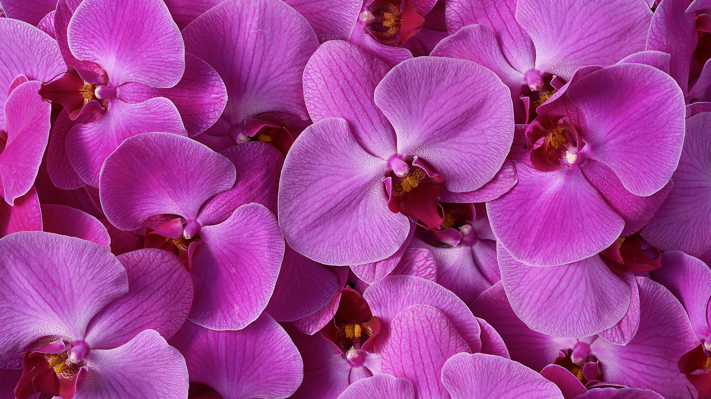

GIVE WITH MEANING
For over 110 years, as the floral-gifting experts, we’ve been helping you give with more care, with greater
ease, and with more meaning.
Established in 1910 as a collective of 10 florists, Florists’ Transworld Delivery (FTD) used the telegraph
to transform the age-old practice of flower-giving. We understood then the unique power of flowers to express
a sentiment and helped people across the world “Say it with flowers.” Today, we have grown into an extensive
network made up of thousands of local florists — each one an artisan who is handcrafting and hand-delivering
fine bouquets all across the country.
When you’re giving with FTD you’re giving the gift of joy, strength, and love and you're giving it with meaning.
FTD.com Affiliate Program
Advertise FTD.com on your site and get 5% on your users' purchases.